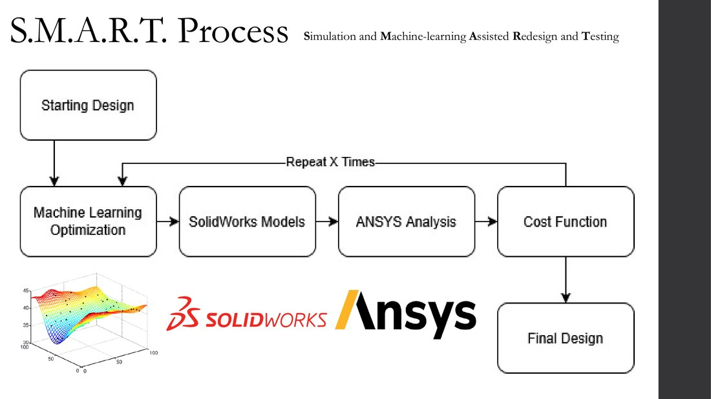
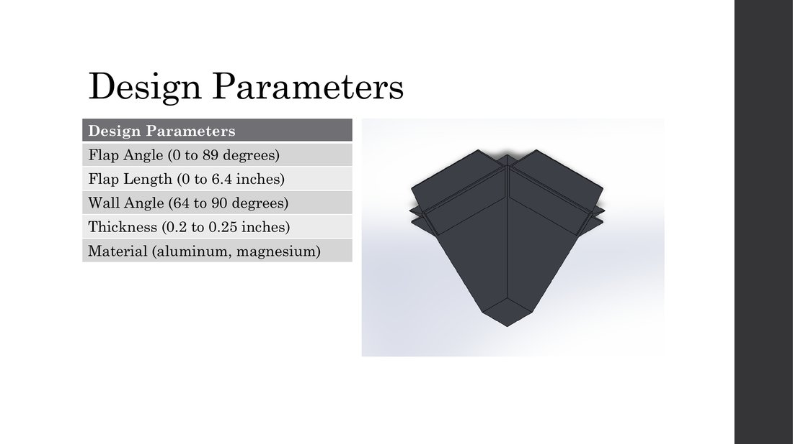
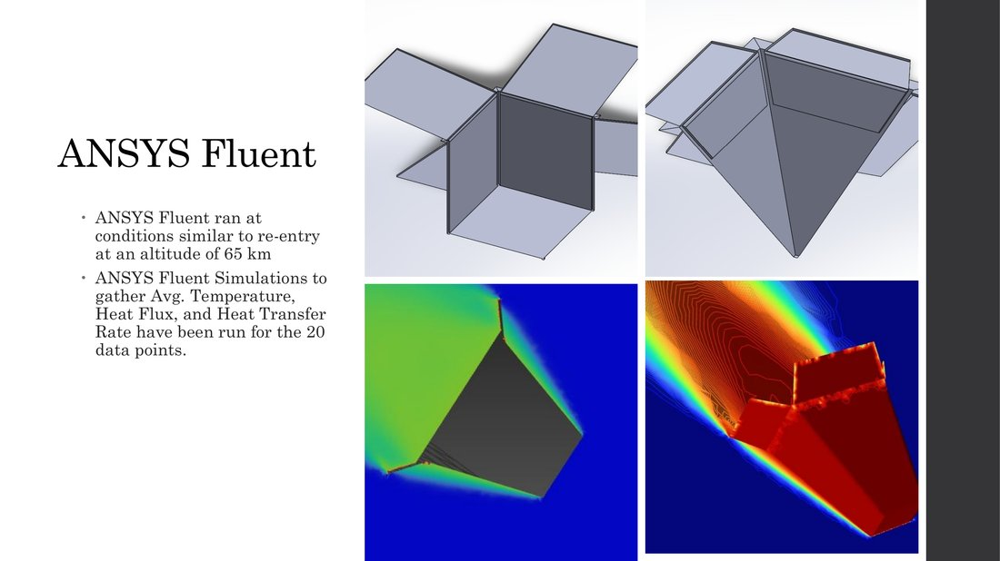
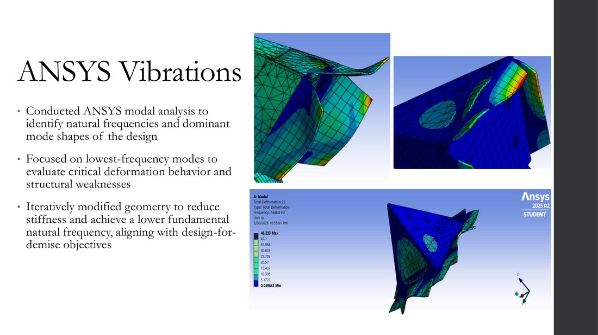
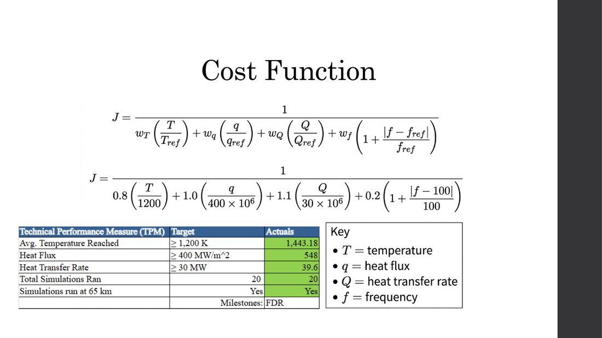
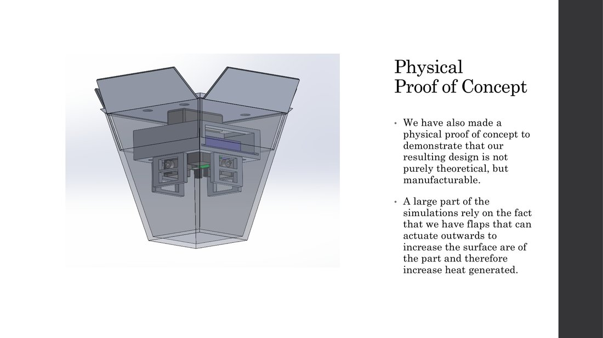
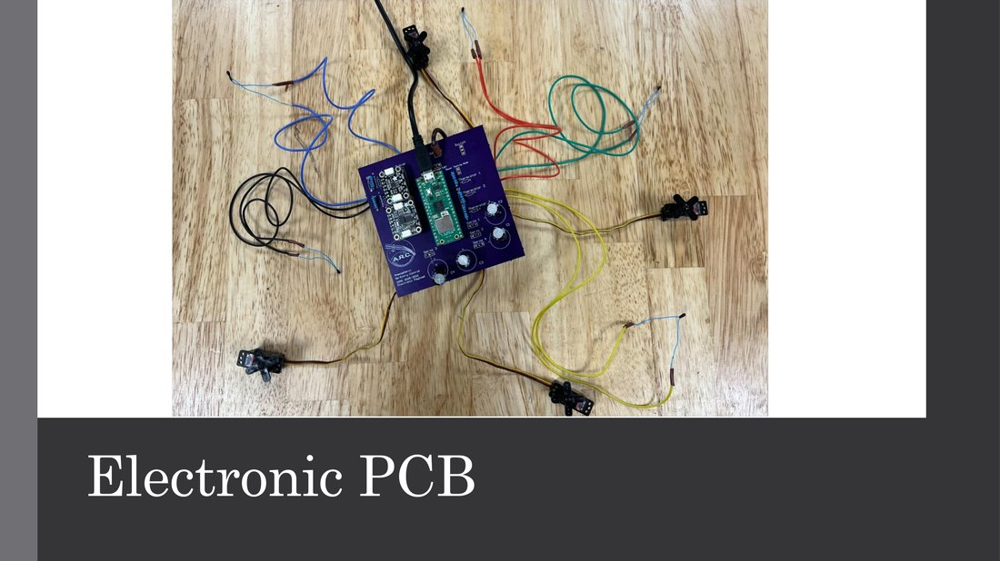

Atmospheric Re-Entry Control — Design for Demise
IPPD capstone with Honeywell Aerospace as industry sponsor. A 7-person team designing an electronic housing that reliably demises during atmospheric re-entry.
Team A.R.C.: Zach Arzt, Michael Daher, Edwin Feldman, Andrew Griner, Avery Hames, Ben Mellin, Loi Park · Faculty Coach: Dr. Rick Lind · Liaison Engineers: Joseph McMahan, Caleb Sjoquist
Problem
As more satellites enter orbit, end-of-life disposal is becoming increasingly relevant. Satellites re-entering Earth's atmosphere must either fully burn up or re-enter in a controlled manner, landing in the ocean. This project focused on the cheaper and more broadly applicable of the two paths: designing hardware that reliably burns up on re-entry, known as Design for Demise, so that no debris large enough to injure someone on the ground survives to reach the surface.
Approach: The S.M.A.R.T. Process
I led development of a custom methodology, Simulation and Machine-learning Assisted Redesign and Testing (S.M.A.R.T.), that replaced manual trial-and-error with an automated, data-driven design loop. A Latin Hypercube sampling generated an initial set of design parameter combinations, each was modeled in SolidWorks and evaluated in ANSYS for aerodynamic and thermal performance, scored by a custom cost function rewarding higher demisability, then fed into a Kriging model to propose the next, more promising batch of parameters. This loop repeated across the semester to converge on a near-optimal design without needing to simulate every possible geometry.

Design Parameters
The design space spanned five variables, flap angle (0 to 89°), flap length (0 to 6.4 in), wall angle (64 to 90°), wall thickness (0.2 to 0.25 in), and material choice between aluminum and magnesium. Deployable flaps were a key design lever, engineered to induce intentional shock-shock interference during descent and increase surface area exposed to heating.

Simulation: ANSYS Fluent & Vibrations
Each candidate geometry was run through ANSYS Fluent at conditions matching re-entry at 65 km altitude to gather average temperature, heat flux, and heat transfer rate, twenty simulations across the design space. In parallel, ANSYS modal analysis identified natural frequencies and mode shapes, and the geometry was iteratively adjusted to lower the fundamental natural frequency, aligning structural weak points with the demisability goals rather than fighting against them.


Results
The final design cleared every Technical Performance Measure set for the Final Design Review, across all 20 simulations run at the target 65 km altitude.

Physical Proof of Concept
As lead of the physical prototype sub-team, I helped build a working prototype to demonstrate the design was manufacturable, not purely theoretical. The build included electronic flap actuation, a thermistor and IMU for sensing, and a custom PCB driving the servos, all packaged inside the demised-housing geometry validated in simulation.


Outcome
The team's product was the S.M.A.R.T. process itself, not just the single resulting geometry, a scalable methodology that could be applied to any electronic housing design problem given more simulation time and computing resources. All Technical Performance Measures were met at the Final Design Review, and the project was presented to Honeywell Aerospace sponsors throughout the design cycle via a public weekly blog.